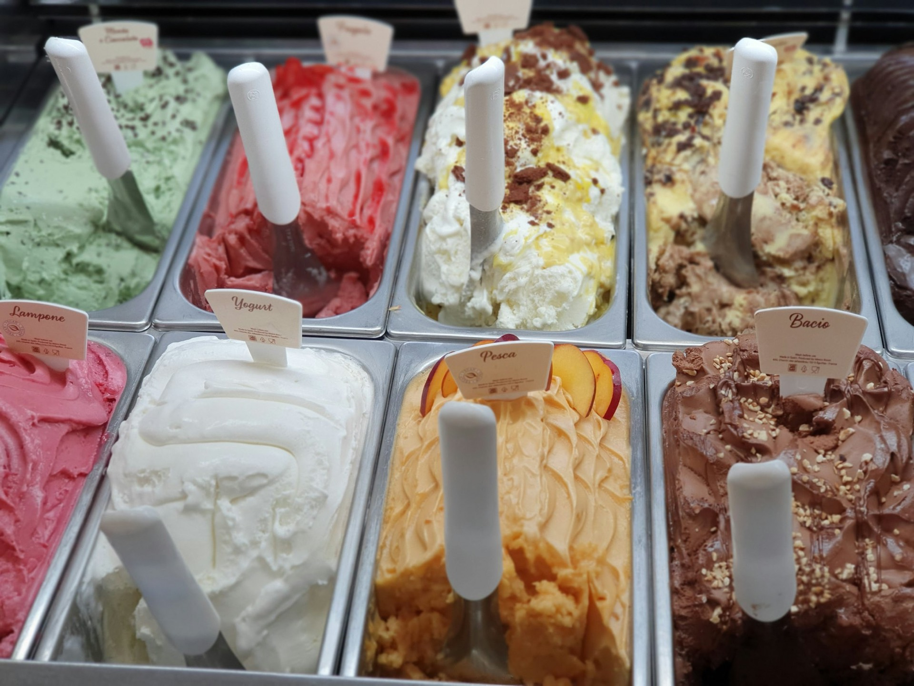
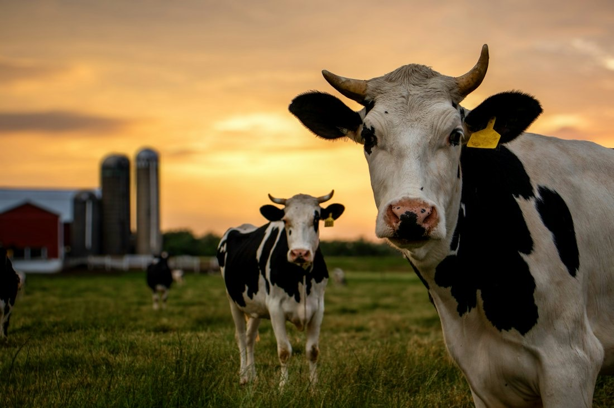
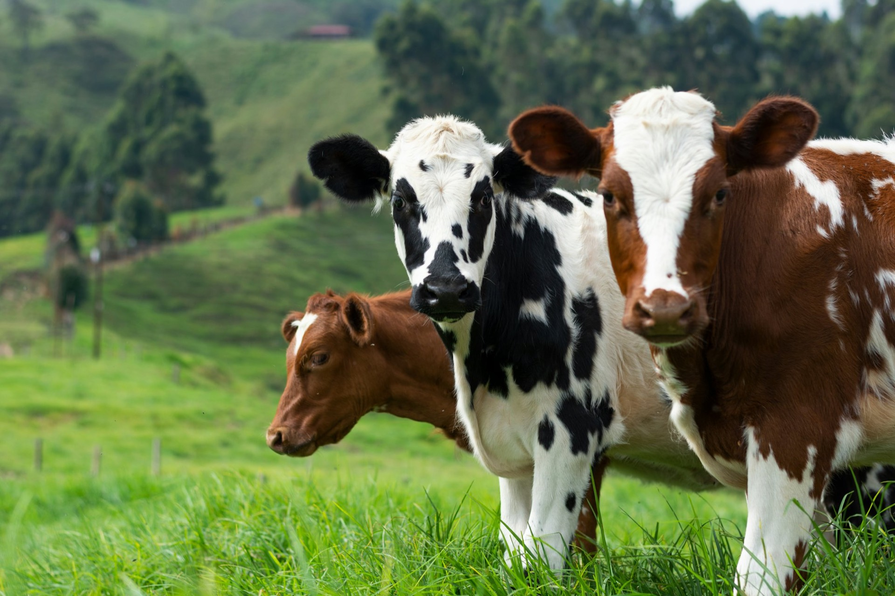

生乳本来のやさしい味
低温殺菌法で、生乳の甘さと豊かな風味を生かしています。

伊藤牧場のジェラート 兵庫県明石市藤江
ぐらなーとは、伊藤牧場が営むジェラート屋さんです。すぐ隣の牧場でしぼった生乳を、100％原材料にしています。
生乳100％
となりの牧場で、
しぼった生乳。
すぐ隣の伊藤牧場でしぼった生乳を、100％原材料にしています。
ジェラートの3Dイメージです。価格はテイクアウトのカップの場合（イートインはシングル484円・ダブル583円）
2013年5月、「新鮮なミルクを直接お客様にお届けしたい」という想いから、先代から約80年続く伊藤牧場のすぐ隣にお店を開きました。
伊藤牧場には30頭の乳牛がいます。かつて明石市内に約120軒あった酪農家は今では3軒となり、藤江地区では伊藤牧場を残すのみとなりました。
低温殺菌法で、生乳の甘さと豊かな風味を生かしています。

近くの幼稚園や小学校の子どもたちにも慣れた、人なつこい牛たち。
明石産をはじめ、兵庫県産の果物や野菜を使っています。

季節限定メニューをふくめた約12種類が店頭に並びます。価格は現在のホームページの表示をもとにしています。
…
| 平日 | 10:00〜16:30 |
|---|---|
| 土日祝 | 10:00〜17:00 |
| 定休日 | 水曜日・不定休 |
その日のジェラートがなくなり次第、終了します。